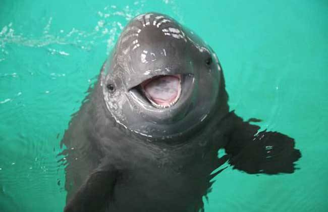
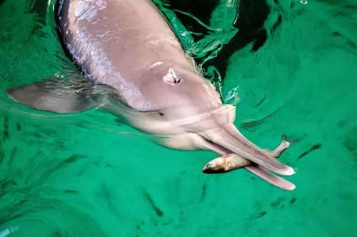

<!DOCTYPE html>
<html>
	<head>
		<meta charset="utf-8" />
		<title>Dolphins in the Rive</title>
		<link rel="stylesheet" href="css/reset.css" />
		<link rel="stylesheet" href="css/index.css" />
		<script type="text/javascript" src="js/jquery-1.9.1.min.js" ></script>
	</head>
	<body>
			<div class="top_fixed">
				<div class="top_fixed_box">
					<div class="three_left">
						
					</div>
					<div class="three_right" >
						<a href="index.html">Yangtze River Dolphin</a></p>
					</div>
				</div>
			</div>	

	<div class="three" id="jump1">
		<div class="three_box">
			<div class="clear"></div>
			<div class="three_show">
				<p class="title">
					Dolphins in the River
				</p>
				<p class="subtitle">
					chapter one_Keep the Smile of Yangtze River_Jessie Xiang
				</p>
				<p class="three_show1">Can you imagine the dolphins jumping in the lake in front of your doorstep? For my grandfather growing on the 
Yangtze River in China, this is what he often saw when he was young. As the longest river in Asia, the Yangtze 
River Basin covers one-fifth of China's land area. It flows through many ancient cities and also called the 
"Mother River" of Chinese culture. It is also connected to countless large and small lakes, including the “Poyang 
Lake” and “Dongting Lake,” which are two of the Chinese three largest lakes.</p>
			<p class="three_show2">Such a substantial aquatic system not only breeds the unique ancient Chinese civilization but also breeds many 
precious, unique creatures, including the “freshwater dolphins” living in the Yangtze River valley: the Yangtze 
River Dolphin (Neophocaena asiaeorientalis asiaeorientalis) and the Baiji Dolphin (Lipotes vexillifer).</p>
			</div>
		</div>
	</div>	
	<div class="four">
		<div class="four_box">
			<div class="top">
				<div class="left">
					
					<p class="four_show1">Yangtze River Dolphin (Finless Porpoise)</p>
					<p class="four_show2">(Neophocaena asiaeorientalis)</p>
				</div>
				<div class="right">
					
					<p class="four_show1">Baiji Dolphin(Lipotes vexillifer）</p>
				</div>
				<div class="clear"></div>
			</div>
			<div class="four_show">
				<p>The Yangtze River Dolphin and the Baiji Dolphin are always brought together for reasons: 
First, they both look similar to marine dolphins. The Baiji is a freshwater white dolphin with a similar shape to the 
marine dolphins, but the Yangtze River Dolphin is much more different from the marine ones. River Dolphins do 
not have a dorsal fin, and their snout is neither sharp nor long. It is a bit like a whale's snout. The second thing 
in common is that they all live in the middle and lower reaches of the Yangtze River, which means their habitat 
range is almost the same. The third point is that they all have a good, beautiful and pure image in ancient Chinese literature.</p>
<p>Also growing on the banks of the Yangtze River, I have never had the privilege of observing these beautiful 
"Water Goddesses." In 2006, Baiji was confirmed as functional extinction.</p>
<p>According to data released by the Chinese Ministry of Agriculture in 2018, the number of the Yangtze River Dolphins is only 1012, and the extinction level has risen from the endangered level to the most critical level.</p>
<p>These top predators in the Yangtze River have been free to linger in rivers and lakes for millions of years, and 
now the story of Baiji has already become a "legend" in the past 30 years, even the representative smile of the 
River Dolphin is hard to find their traces.</p>
<p>“When I was standing on the edge of the river beach and watching the Yangtze River, I always saw several River 
Dolphins jumping out of the Yangtze River.” When Grandpa took me to River Beach Park, he often looked at the 
river with nostalgia. I was shocked at that time. I could not believe that there were "dolphins" in the Yangtze 
River, and I even asked my grandfather with urgency: "What is the River Dolphin?"</p>
<p>Because in my impression, the dolphins are very adorable, often appearing in the sparkling clear blue ocean, 
rather than in the Yangtze River, which carries turbid sand and presents a dark yellow color. Not to mention that 
there are often large and small cargo ships driving busy on the Yangtze River. Their sounds of motors and the 
spindrift rolling out of the machines seem never to be in the same scenario with the creatures as "dolphins."</p>
<p>However, it turns out that they do not appear in the same picture. As the economy has developed by leaps and 
bounds in the past 30 years, the Yangtze River has brought many economic benefits as a “golden waterway.” 
However, in the eyes of scientists, the Yangtze River has been more like a "dead waterway" in recent decades.</p>
<p>Researcher Wang Ding of the Institute of Hydrobiology, Chinese Academy of Sciences once said: "If the Yangtze River does not undergo a fundamental change, the fate of the River Dolphin will be in jeopardy."</p>
<p>Not only the River Dolphins, but also a large number of factory sewage discharges and busy transportation 
networks, fishing industry, and sand digging boats have already destroyed the Yangtze River ecology beyond 
recognition. Countless numbers of aquatic organisms are reduced or even extinct in a concise time. This kind 
of destruction came so fast and so hard, and even Baiji that had survived in China for more than 20 million years 
was not spared. When the top predators in the Yangtze River cannot survive, what will the Yangtze River look 
like?</p>
<p>For the average citizen, this answer may have been a mystery for a long time. The river surface of Yangtze River 
is broad, and because of the sediment, the color is turbid. We cannot see how the world below the river surface 
has undergone dramatic changes. However there is one kind of citizen who lives in and fed by Yangtze River 
for generations. They are very aware of what is happening under the water - they are Fishermen of the Yangtze 
River.</p>
		<p class="title">Go to another chapter</p>
		<p class="mask">
			<a  class="active" href="xq1.html"><span>Dolphins in the River</span>
			<a href="xq2.html"><span>Symbiotic Relationship</span></a>
			<a href="xq3.html"><span>Digital Management & Corporate Publicity</span></a>
		</p>
			</div>
		</div>
	</div>		
	</body>


</html>


